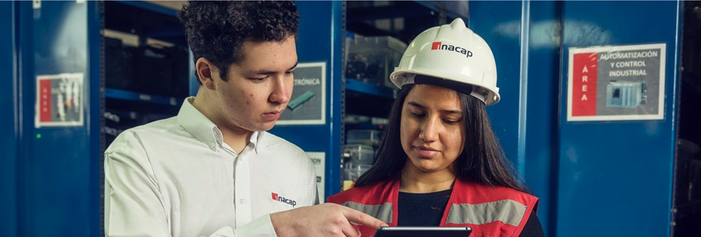
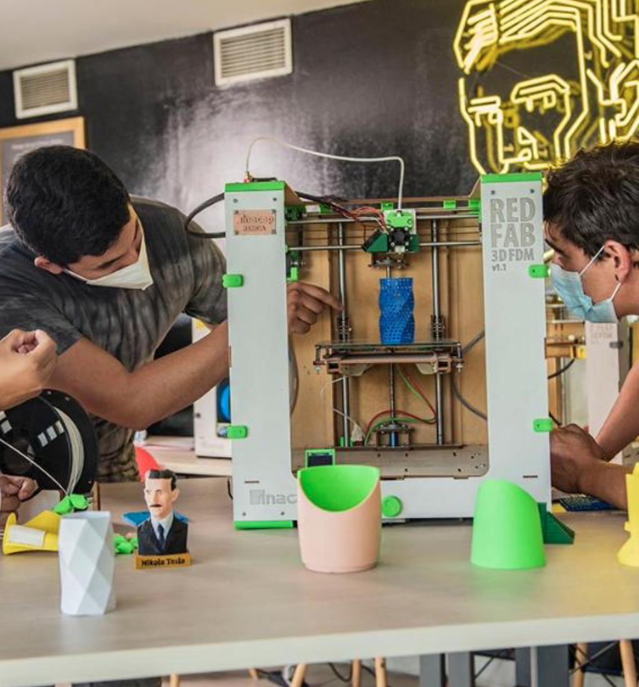

Ejes del Modelo Educativo de INACAP
Articulamos innovación, educación y entorno para formar agentes de cambio
Articulamos innovación, educación y entorno para formar agentes de cambio
Se promueven experiencias de aprendizaje en contextos reales mediante la colaboración con empresas y organizaciones, integrando metodologías innovadoras que permiten abordar desafíos del entorno desde la formación, fortaleciendo así la pertinencia educativa y el vínculo con la realidad social y productiva.

Se impulsa el desarrollo personal y profesional continuo a través de acciones formativas conectadas con el entorno, formando personas con competencias emprendedoras e innovadoras capaces de adaptarse y generar valor sostenible en contextos cambiantes.
Se articulan trayectorias educativas con las necesidades del entorno territorial, promoviendo la empleabilidad mediante experiencias pertinentes, enriquecidas por el uso de tecnologías e innovación institucional que fortalecen la inserción laboral y la productividad local.
Se desarrollan proyectos y soluciones innovadoras en colaboración con actores del entorno, respondiendo a desafíos sociales y productivos, y contribuyendo al desarrollo sostenible de regiones y comunidades a través de la transferencia de conocimiento y tecnología.
Escríbenos y co-creemos el futuro de la innovación. Cada sede INACAP tiene un equipo listo para apoyarte.